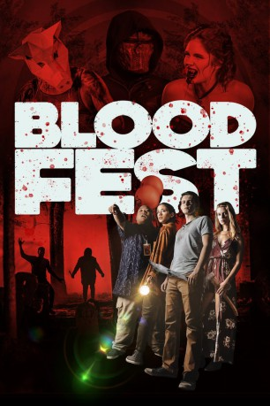

#12143 Blood Fest
 gesehen am 30.12.2019
gesehen am 30.12.2019
 
 IMDB-Wertung: 5.3 / 10
IMDB-Wertung: 5.3 / 10  Tomatometer: 53
Tomatometer: 53  Metascore: 54
Metascore: 54 
Die Freunde Dax, Sam und Krill haben seit Langem nur einen Wunsch: Die Horror-Convention "Blood Fest" live erleben. Dank der aufstrebenden Schauspielerin Ashley wird dieser Traum endlich wahr. Doch die Freude währt nur kurz: Denn Horror-Regisseur Anthony Walsh verkündet, dass dieses Mal während des Festivals ein realer Horrorfilm gedreht wird – mit den Teilnehmern der Convention als Opfer. Aus irrealem Horrorspaß wird blutiger Ernst, den die Teenager am eigenen Leib zu spüren bekommen.
Jahr: 2018
Dauer: 92 Minuten
FSK: Not Rated
Land: USA Studio: CinedigmTonspuren: DTS - ,
Untertitel:
Auflösung: 1080p (1920x816) Größe: 4433 MB
Genre: Horror, Komödie
Regisseur: Owen Egerton
Drehbuch: Owen Egerton
Soundtrack:
Darsteller:
 Robbie Kay als Dax
Robbie Kay als Dax Jacob Batalon als Krill
Jacob Batalon als Krill- Seychelle Gabriel als Sam
- Barbara Dunkelman als Ashley
- Chris Doubek als Roger Hinckley
- Nicholas Rutherford als Lenjamin Caine
 Tate Donovan als Dr. Conway
Tate Donovan als Dr. Conway- Rebecca Lynne Wagner als Jayme / Red
- Tristan Riggs als Young Dax
- Olivia Grace Applegate als Rain the Vampire
- Christina Parrish als Amy
- Paul Ogola als Billy
- Lynn Andrews III als Trapper
- Samantha Ireland als Mrs. Conway
- Geoff Ramsey als Guns
- Gavin Free als Gavin Free
 Zachary Levi als Zachary Levi
Zachary Levi als Zachary Levi Samantha Inoue Harte als Zombie
Samantha Inoue Harte als Zombie- Felicia M. Reyes als Zombie
- Matt Blackwell als Zombie (uncredited)
- Roman Brion als Dancer (uncredited)
- Isla Cervelli als Vampire (uncredited)
- Ron Cho als Butcher (uncredited)
- Will David als Festival Attendee (uncredited)
- James T. Davis als Festival Attendee (uncredited)
- Jarrod Dixon als Butcher (uncredited)
- Christopher Lee Herod als Butcher (uncredited)
- Juliette Kida als Vampire (uncredited)
- Daemon Pedroza als Zombie (uncredited)
- Conrad Ramirez als Clown (uncredited)
- Stan Taylor als Festival Attendee (uncredited)
- Chanse Tekell als Park Security (uncredited)
- Carl Thomas als Butcher (uncredited)
- Brian Towns als Festival Attendee (uncredited)
- Owen Egerton als Anthony Walsh
- Byron Brown als Mac
- Adam Ellis als The Arborist
- Josh Ornelas als Gamer #1
- Billy Burson III als Man in Crowd
- Blaine Gibson als Vamp Camp Bro
- Elyse Willems als Selfie Attendee
- Will Hyde als Masked Killer - Prologue
- Melena Kiriaki als Cute Girl #1
- Katarina Zito als Cute Girl #2
- Jessica Vasami als Interview Journalist
- Dan Hirons als Popcorn Eating Man
- Roy T. Burge als Butcher
- Blake Carter als Zombie
- Will Chambers als Wally T Pants, Esq.
- Daniel Giordano als Enrique
Datei: X:\NEU\Blood Fest (2018, FSKNot Rated, 1920x816).mkv seit 30.12.2019
 Es gibt insgesamt 187 Filme in der Gruppe 'NEU'
Es gibt insgesamt 187 Filme in der Gruppe 'NEU'